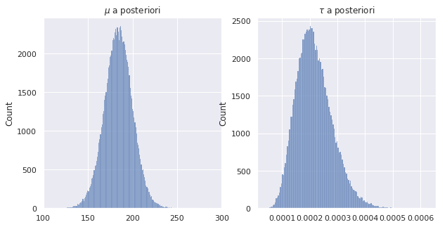

Análise Bayesiana de amostras da distribuição Normal
Referências
[1] Andrew Gelman. Bayesian Data Analysis. Parte I, Seção 3.3: essa referência usa a variância ao invés da precisão.
[2] Kevin P. Murphy. Conjugate Bayesian analysis of the Gaussian distribution: Não muito simples, mas possui todas as contas.
Precisão da distribuição normal
Definimos como a precisão da distribuição normal.
A função da densidade de probabilidade da distribuição normal é, :
Teorema
Suponha que , desconhecidos. Suponha que
Então a distribuição conjunta de e a posteriori é dada por:
onde
| Parâmetro | Valor a posteriori do parâmetro |
|---|---|
Família Normal-Gamma
Sejam e variáveis aleatórias. Suponha que a distribuição condicional de dado é normal com média e precisão e que a distribuição marginal de seja gamma com parâmetros . Então, falamos que a distribuição conjunta de e é a distribuição normal-gamma com hiperparâmeteros e .
A distribuição marginal da média
Suponha que a distribuição a priori e seja normal-gamma com hiperparâmetros e . Então
tem a distribuição com graus de liberdade.
Nesse caso, se , . Se ,
Obs.: As condições sobre , vem da existência do momento somente se o grau de liberdade da distribuição é maior do que , isto é, .
Comparação com Intervalos de Confiança
Podemos construir intervalos de confiança para no mundo Bayesiano, pois ela é uma variável aleatória. Nesse caso, podemos fazer da seguinte maneira:
Ou seja, ganhamos um intervalo de confiança de graça!
Implementação
Quando temos dados, , podemos fazer que é uma pontual (só para um valor de ). Mas isso nem sempre é o melhor, e às vezes nem tão prazeroso. Por isso precisamos trazer Bayes para nossa análise.
import numpy as np
from scipy.stats import norm, gamma,t
import pandas as pd
import matplotlib.pyplot as plt
import seaborn as sns
sns.set()
Nesse exemplos, vamos estudar o exemplo Casas de Enfermagem em Novo México, tema estudado por Howard L. Smith, Neill F. Piland e Nancy Fisher. Nesse trabalho explora os desafios da enfermagem na área rural, para que se mantenha a viabilidade. Vamos utilizar o banco de dados deles, que incluem as seguintes informações:
- BED: números de camas na casa.
- MCDAYS: dias anuais de internação médica (centenas)
- TDAYS: total anual de pacientes dias (centenas)
- PCREV: receita anual total de atendimento ao paciente (centenas)
- NSAL: salário das enfermeiras anual (centenas)
- FEXP: despesas anuais com instalações (centenas)
- RURAL: 1, se rural, 0, se urbano
Os dados se encontram nesse site.
table = []
with open('../data/nursinghome.txt', 'r') as f:
line = f.readline()
table.append(line.split())
line = f.readline()
while line != '':
table.append([int(i) for i in line.split()])
line = f.readline()
nurse_df = pd.DataFrame(data = table[1:], columns = table[0], dtype = np.int)
Vamos considerar nesse exemplo a coluna MCDAYS, restrita às casas urbanas, que denotaremos por . Antes de observarmos os dados, vamos modelar o valor de para cada casa como uma variável aleatória normal com média e precisão .
urban_nurse_df = nurse_df[nurse_df.RURAL == 0]
plt.bar(x = range(len(urban_nurse_df)), height = urban_nurse_df.MCDAYS)
plt.title('MCDAYS por casa urbana de enfermeiras')
plt.show()

Para calcular nossa priori, deveríamos conversar com especialistas. Como não é o caso, vamos usar as informações de camas. Temos:
print('Média: {:.1f}, Desvio-Padrão: {:.1f}'. format(np.mean(urban_nurse_df.BED), np.std(urban_nurse_df.BED)))
Média: 111.4, Desvio-Padrão: 42.3
Podemos supor, a priori, que a taxa de ocupação é de 50%. Logo, em um ano, podemos obter que os dias anuais de internação médica são:
media = 0.5*365*np.mean(urban_nurse_df.BED)/100 # unidade em centenas
std = 0.5*365*np.std(urban_nurse_df.BED)/100
Agora precisamos mapear esses valores para os hiperparâmetros a priori .
Vamos dibidir a variância obtida acima (usando o número de camas), como incerteza, e dividiremos igualmente essa incerteza sobre a média e a precisão, isto é,
Escolhemos (arbitrário, mas preferível a ser pequeno, porque esse parâmetro tem a interpretação de ser o conhecimento sobre o valor.
Logo
alpha0 = 2
beta0 = alpha*std**2/2
mu0 = media
lambda0 = beta*2/(std**2*(alpha - 1))
Agora conseguimos expressar nosso conhecimento a priori para construir o primeiro intervalo de confiança. Vamos usar a expressão construída anteriormente.
Primeiro, vamos ver, numericamente, a distribuição de
def draw_samples(alpha0, beta0, lambda0, mu0, seed = 10000):
r = np.random.RandomState(seed)
tau = r.gamma(shape = alpha0, scale = 1/beta0, size = 100000)
mu = r.normal(mu0, scale = np.sqrt(1/(lambda0*tau)))
return mu, tau
mu_samples, tau_samples = draw_samples(alpha0, beta0, lambda0, mu0)
fig, ax = plt.subplots(1,2, figsize = (10,5))
sns.histplot(mu_samples, ax = ax[0])
sns.histplot(tau_samples, ax = ax[1])
ax[0].set_title(r'$\mu$ a priori')
ax[1].set_title(r'$\tau$ a priori')
ax[0].set_xlim((0,500))
plt.show()

ci_mu = (np.quantile(mu_samples, 0.025), np.quantile(mu_samples, 0.975))
print(ci_mu)
(95.85458277508882, 309.0974651995673)
Agora, vamos observar os dados e calcular nossa posteriori! Vamos atualizar como demonstrado no Teorema.
| Parâmetro | Valor a posteriori do parâmetro |
|---|---|
n = len(urban_nurse_df)
mom1 = np.mean(urban_nurse_df.MCDAYS)
mom2 = np.var(urban_nurse_df.MCDAYS)*n
mu1 = (lambda0*mu0 + n*mom1)/(lambda0 + n)
lambda1 = lambda0 + n
alpha1 = alpha0 + n/2
beta1 = beta0 + mom2/2 + (n*lambda0*(mom1 - mu0)**2)/(2*(lambda0 + n))
mu_samples_post, tau_samples_post = draw_samples(alpha1, beta1, lambda1, mu1)
fig, ax = plt.subplots(1,2, figsize = (10,5))
sns.histplot(mu_samples_post, ax = ax[0])
sns.histplot(tau_samples_post, ax = ax[1])
ax[0].set_title(r'$\mu$ a posteriori')
ax[1].set_title(r'$\tau$ a posteriori')
ax[0].set_xlim((100,300))
plt.show()

ci_mu = (np.quantile(mu_samples_post, 0.025), np.quantile(mu_samples_post, 0.975))
print(ci_mu)
(152.61993663355443, 215.58303707725233)
Observe como o intervalo de confiança está bem menor! Ou seja, os dados aumentaram nossa certeza sobre o parâmetro. Vamos comparar os valores.
fig, ax = plt.subplots(figsize = (10,5))
sns.histplot(mu_samples_post, ax = ax, kde = True, stat = 'density', label = 'Posteriori')
sns.histplot(mu_samples, ax = ax, kde = True, stat = 'density', label = 'Priori', color = 'red')
ax.set_title(r'$\mu$')
ax.set_xlim((-200,400))
ax.legend()
plt.show()

Por fim, vamos comparar o estimador de Bayes com o de Máxima Verossimilhança:
mle = mom1
eb = np.mean(mu_samples_post)
print('MLE: {}'.format(mle))
print('Bayes Estimator: {}'.format(eb))
MLE: 182.16666666666666
Bayes Estimator: 184.21760983937554